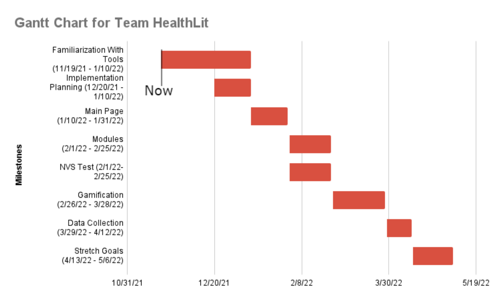

This image shows our progress and upcoming schedule with creating our application. We are currently working towards our end of the semester assignments. We are also getting familar with
our tools that we will be using in our application and developing our tech demos to present to our mentor and client. The events mentioned below in our Gantt Chart mostly occur now until the end of Winter Break (Nov.19 - Jan. 10).
Then development of the main page of the app will be next (Jan. 10 - Jan 31). This will consist of the administrative portal, along with a way for the user to log into the application. The information used for this should be stored in a database. After
that, development of the modules themselves will take place. Along with the modules, there will also be the NVS assessment and the form asking for information about the parent’s child(ren) implemented as well. These milestones will be developed at the same
time (Feb. 1 - Feb. 25). Once that is completed, the next course of action will be the gamification portion of the project (Feb. 26 - Mar. 28).The last part of the application’s development is the data collection section (Mar. 29 - Apr. 12).

This page shows our progress in all of the documents that our team has created during the first phase of development.
Team Inventory
This Team Inventory document introduces the team members of Team HealthLit, letting the readers know more about us and some of our interests and hobbies.
Team Standards
This Team Standards document outlines the rules and roles that our team will follow during the development of our app.
Mini Introduction to HealthLit Project
This short presentation introduces our team and our project, talking about the basic aspects of our problem and solution.
Mini Introduction Video to HealthLit Project
This short video presentation introduces our team and our project, talking about the basic aspects of our problem and solution.
Tech Feasibility Analysis
This document outlines all the challenges and solutions that our team expects to encounter during our development of the app.
Design Review 1
This first design review presentation gives more detail about the project and it's projected timeline.
Tech Demo Flight Plan
This document outlines a short series of tech demos that our team has created to prove the feasibility of our chosen technologies.